From Viral Proteins to Ubiquilins
How fluorescent tags shape phase separation in cells
Russell Barkley, PhD
Postdoctoral candidate seminar
Wohlever Lab
University of Pittsburgh
October 13, 2026
Outline
Biomolecular condensates
Reovirus µNS forms condensates in cells
Tags changed wild-type and mutant condensation
Virtual microscopy
High-content imaging of whole cell populations
Cloud-hosted OME-Zarr in a web browser
Ubiquilin phase separation in cells
How UBQLN2 condensation affects its interactors
Controlling UBQLN condensation with light
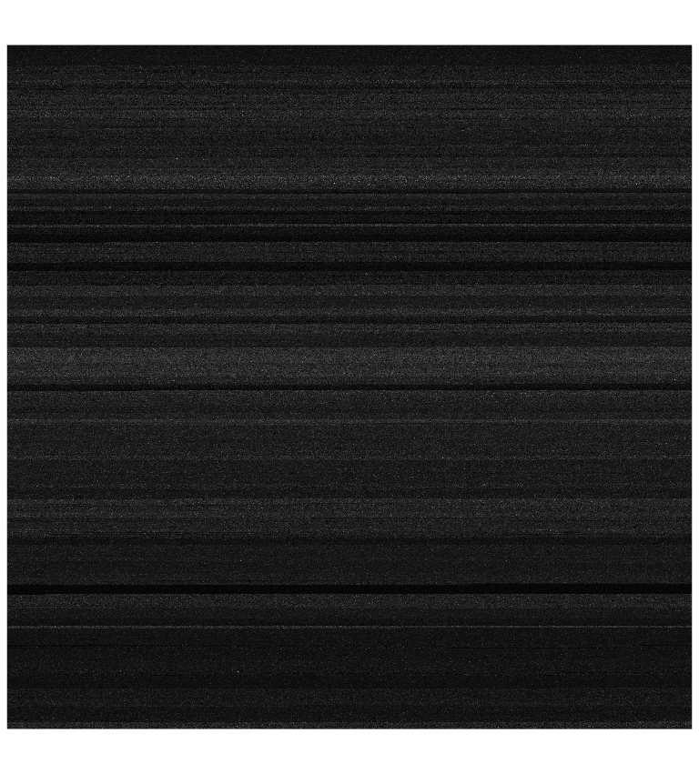
Biomolecular condensates
Fluorescent protein tags affect the condensation properties of a phase-separating viral protein
Russell J. R. Barkley, Jack C. Crowley, Andrew J. Brodrick, Warren R. Zipfel, and John S. L. Parker
Hallmarks of biomolecular condensates
- Round morphology
- Fusion and fission
- Internal rearrangement
- Saturation concentration
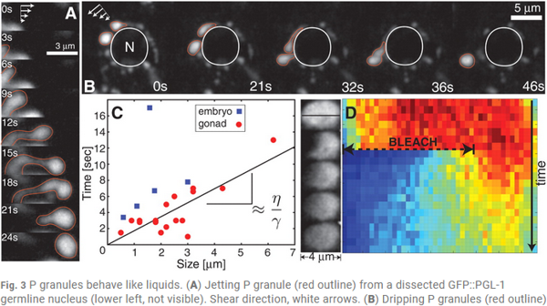
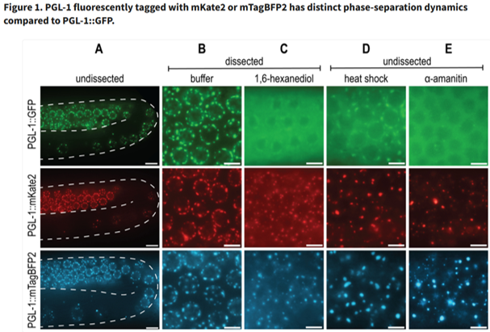
Reovirus factories are round once freed from microtubules
- Round morphology
- Fusion and fission
- Internal rearrangement
- Saturation concentration
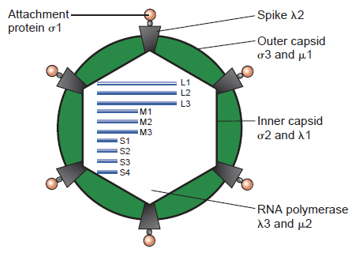
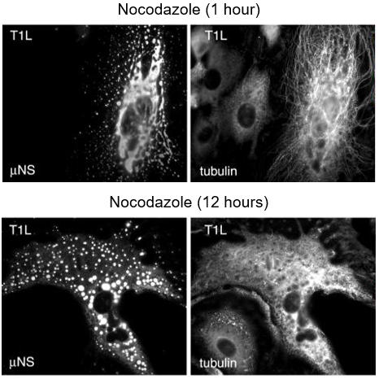
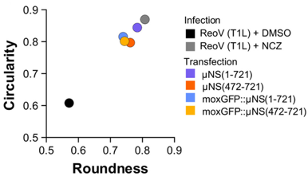
Reovirus factories are filamentous in infected cells
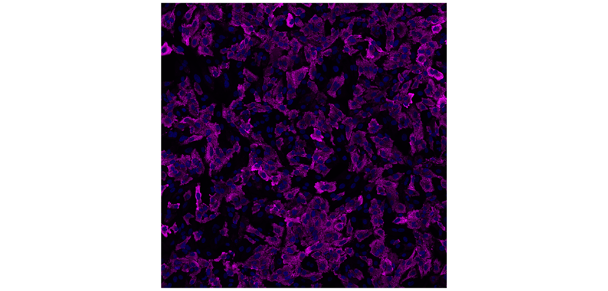
Transfected µNS forms factory-like structures
- Residues 472-721 are the minimal region that forms inclusions
- Coiled-coil domains are thought to drive self-assembly
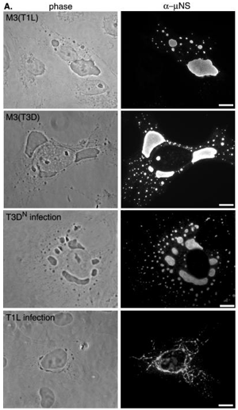
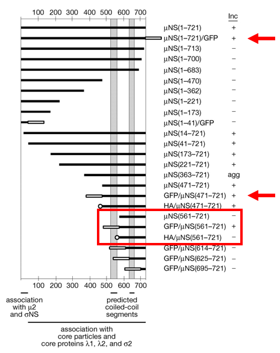
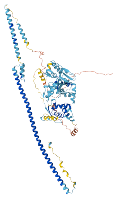
µNS inclusions fuse and relax like liquids
Inverse capillary velocity: the ratio of viscosity (η) to surface tension (γ)
- Round morphology
- Fusion and fission
- Internal rearrangement
- Saturation concentration
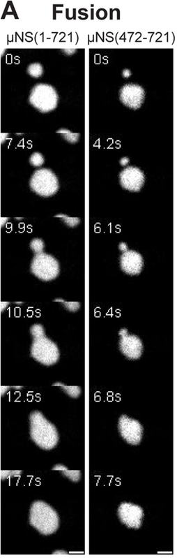
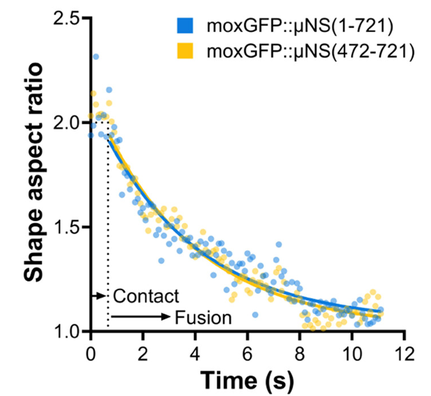
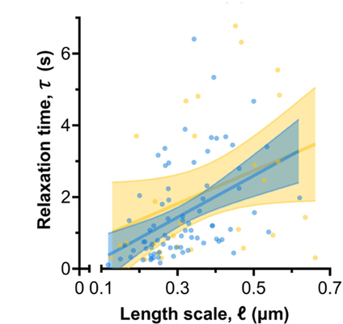
µNS is mobile but viscous inside inclusions
- Round morphology
- Fusion and fission
- Internal rearrangement
- Saturation concentration
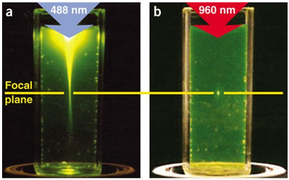
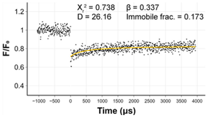
Full-length µNS forms more inclusions
moxGFP::µNS(1-721)
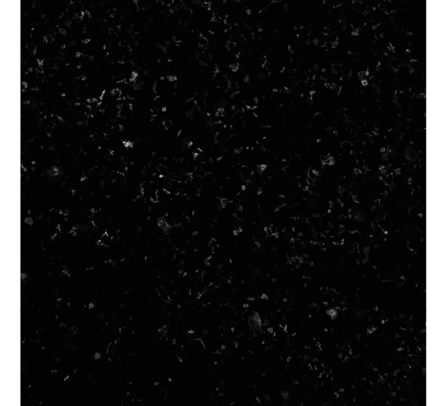
moxGFP::µNS(472-721)
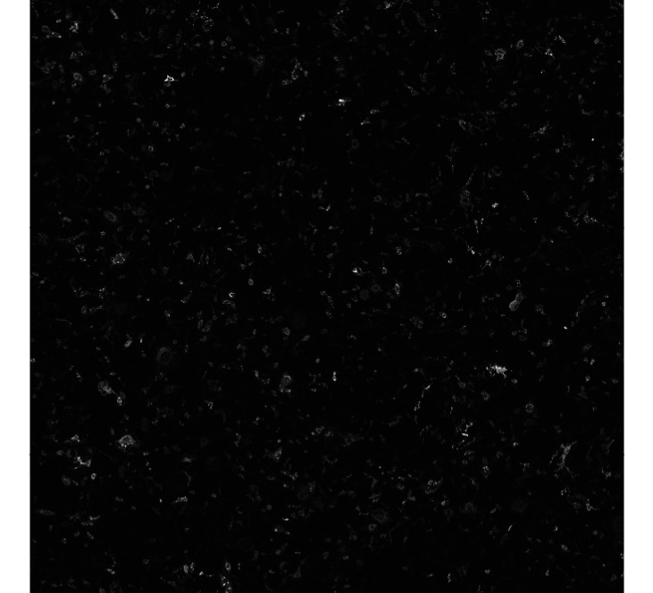
Watching inclusions nucleate across a whole field
moxGFP::µNS(1-721)
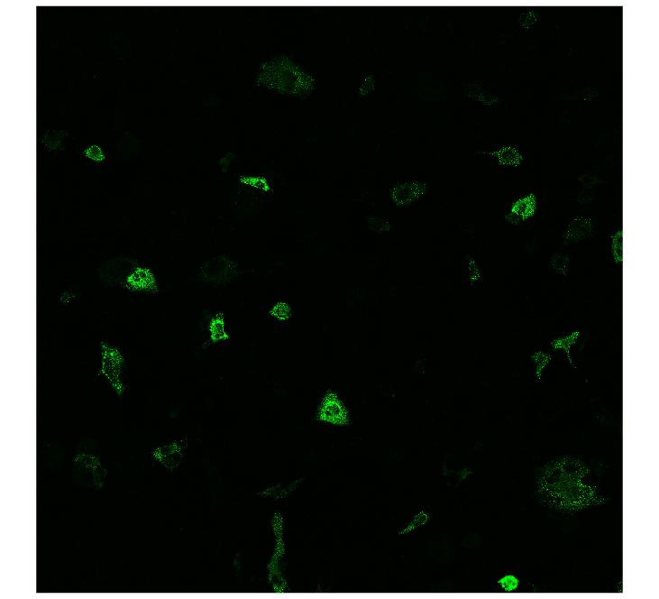
moxGFP::µNS(472-721)
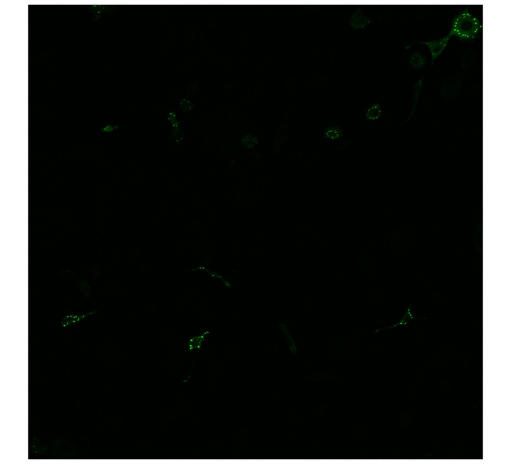
µNS inclusions form above a saturation concentration
- Round morphology
- Fusion and fission
- Internal rearrangement
- Saturation concentration
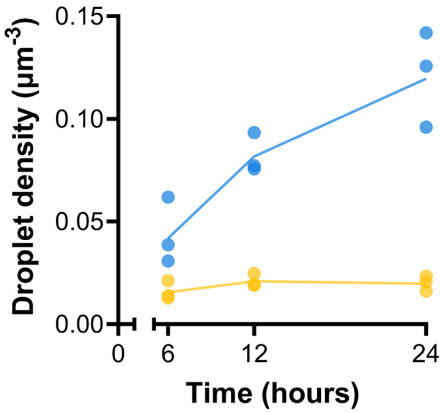
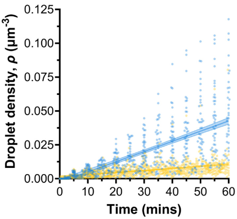
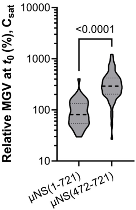
µNS inclusions behave like biomolecular condensates
- Round morphology
- Round in transfected cells, and in infected cells freed from microtubules
- Fusion and fission
- Inclusions fuse and relax to spheres
- Internal rearrangement
- µNS moves within inclusions, slowly
- Saturation concentration
- Inclusions appear above a threshold concentration
All of this was measured with a GFP tag.
Tags changed condensation of wild-type µNS
- GFP tags made 6 to 7 times more condensates than untagged µNS
- mNeonGreen was the closest to untagged µNS
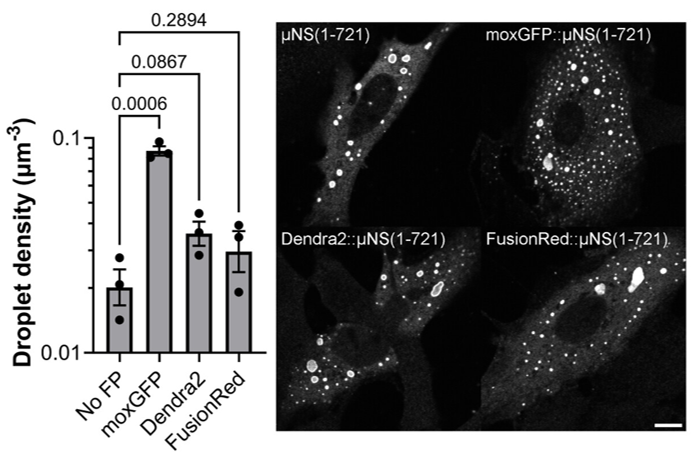
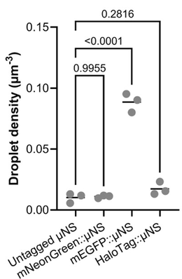
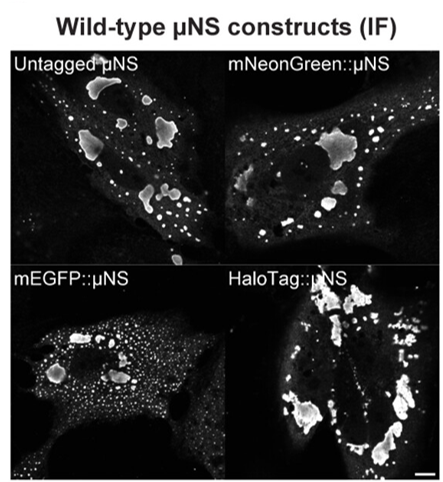
Tags rescued mutants that should not condense
- Two tags rescued condensation of 4 of 6 non-condensing mutants, in a fraction of cells
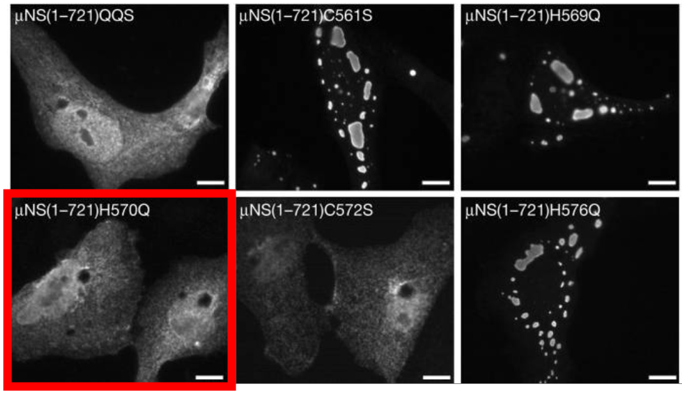
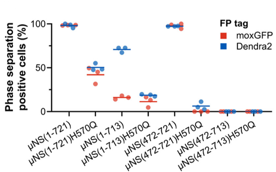
Rescue depended on the tag
- Of the tags screened on 2 of these mutants, only HaloTag did not rescue condensation
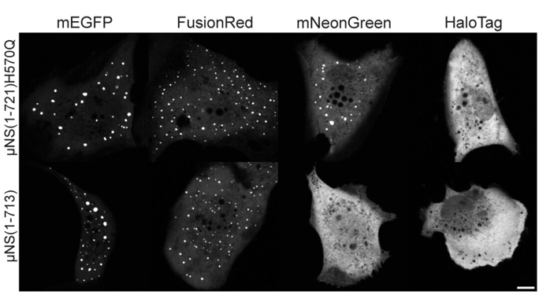
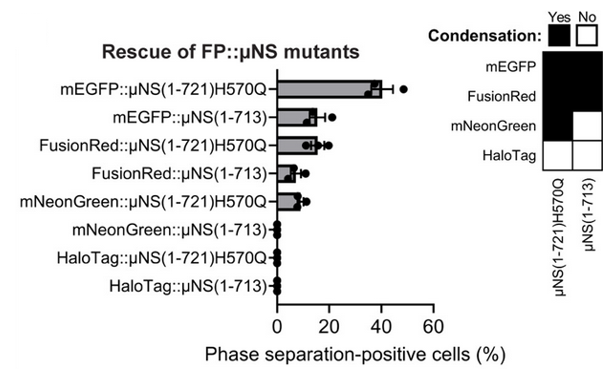
Conclusions
- µNS inclusions are, most likely, biomolecular condensates.
- GFP tags promoted condensation of wild-type µNS.
- Many tags induced condensation of non-condensing µNS mutants.
- Cross-validate: an untagged control and more than one tag.
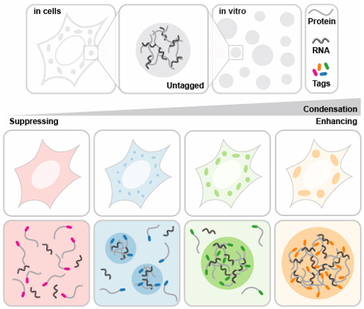
Tags affected translation and condensation independently
Phase separation depends on concentration; proteostasis sets concentration.
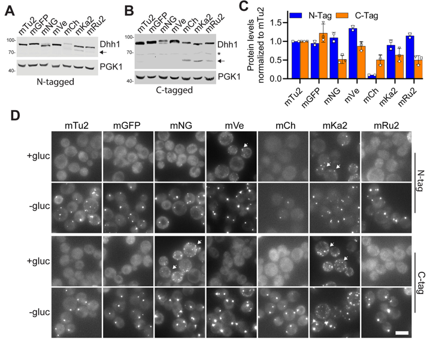
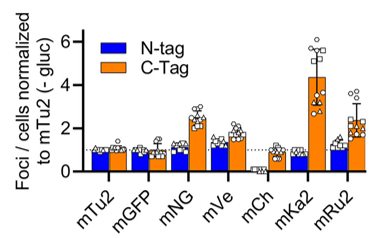
Fatti, Khawaja and Weis (2025). MBoC.
Open question: do tags change protein levels through synthesis, or through degradation?
Virtual microscopy
Reimag(in)ing Representative Images
Russell JR Barkley, Andrew J Brodrick, John SL Parker
From representative images to whole datasets
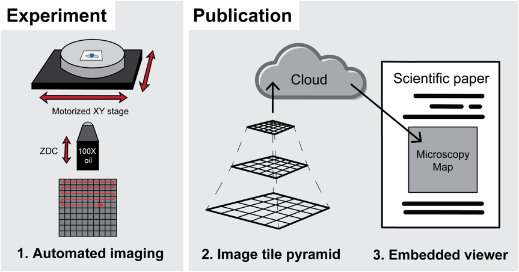
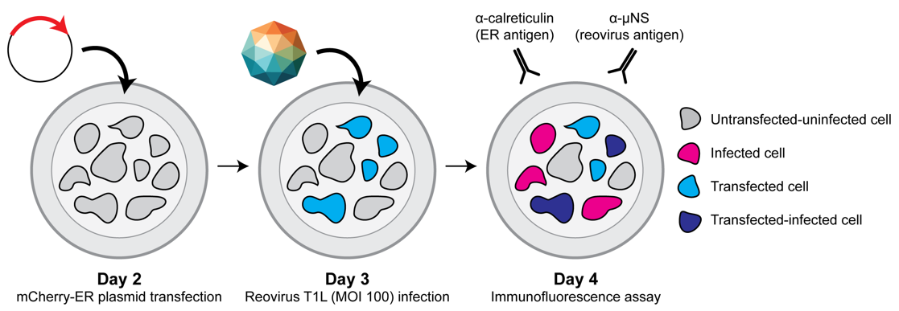
Readers can inspect every cell for themselves
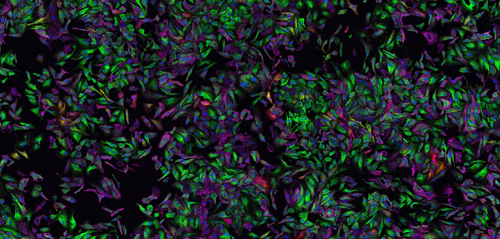
How do readers view interactive figures?
Ongoing: openRxiv Labs experiment proposal, in collaboration with Find Nuclei
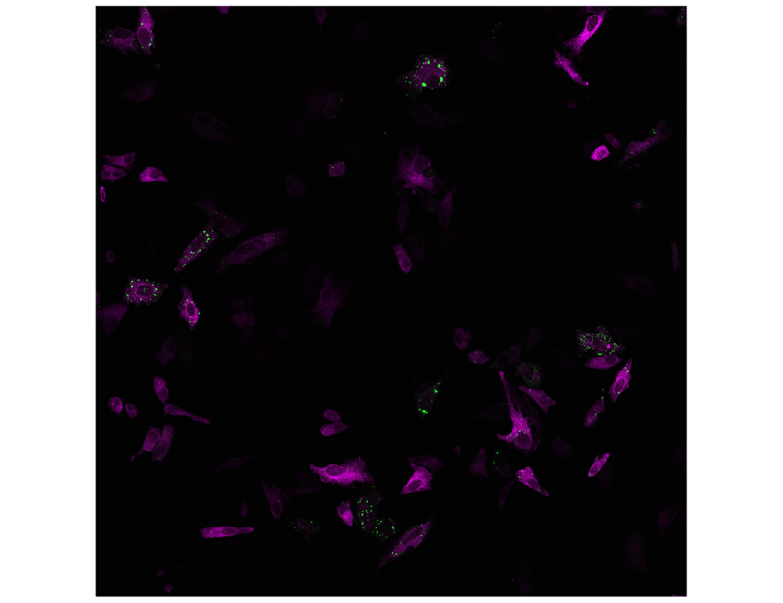
Ubiquilin phase separation in cells
Applying these methods to UBQLN
Two experiments, and how I would share them
Measure
- Induce wild-type or ALS-mutant UBQLN2 in TKO cells
- Screen GFP-P2A-mCherry reporters across UBQLN2 interactors: TDP-43, APP, Tau, α-synuclein, E3 ligases
- Multiplexed automated imaging of whole populations, live and fixed
- Per-cell quantification: puncta, GFP/mCherry, colocalization with UBQLN2
Does UBQLN2 condensation change the condensation and turnover of its interactors?
Control
- Induce UBQLN condensation with light: CRY2 optodroplets
- Co-express timer-tagged UBQLN interactors
- Or build CRY2-UBQLN-timer: condensation and age in one protein
Does UBQLN condensation change protein age?
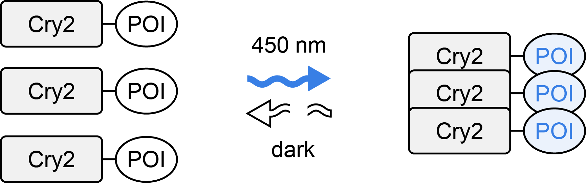
Open data
- No download, no software: datasets open in a browser Vizarr. Manz et al. (2022). Nat Methods.
- The same link works for a lab mate, a collaborator, a reviewer and a reader
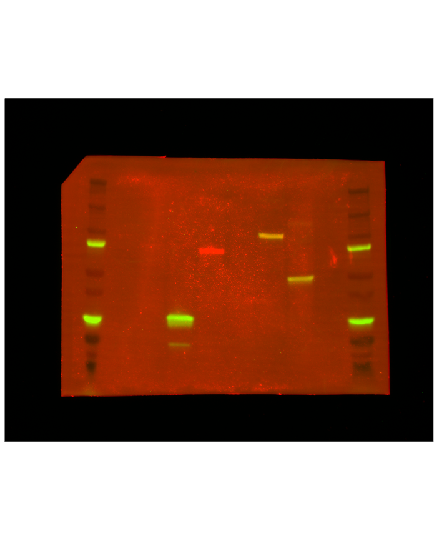
A western blot, streamed the same way.
Acknowledgements
russellbarkley.github.io/wohlever
Coauthors
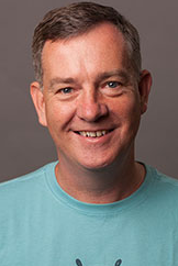
Baker Institute for Animal Health
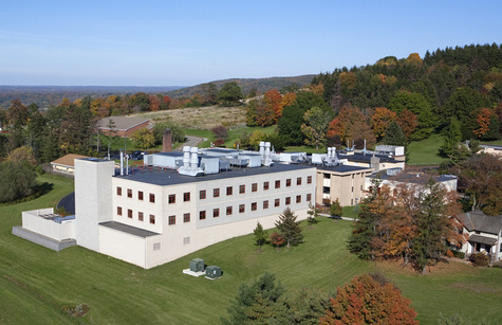
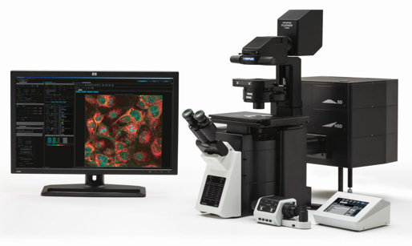
Elemental Microscopy
Georgios Varnavides, PhD Assistant Professor at Delft University of Technology
Colin Ophus, PhD Associate Professor at Stanford University
Curvenote
Steve Purves, PhD Co-founder & CTO
Cloud & funding
Gavin Biffar San Diego Supercomputer Center
Find Nuclei Open-source OME-Zarr viewer
NSF ACCESS Allocation BIO250450